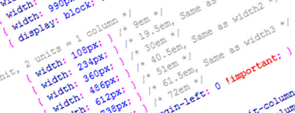

Frameworks CSS
Debido a que las estructuras CSS son complicadas surgen los frameworks que ayudan a facilitar el desarrollo de las aplicaciones. En la actualidad existen gran variedad de frameworks de CSS. Se seleccionaron los frameworks más utilizados con el fin de evaluar las características, ventajas, desventajas, alcances y limitaciones. La lista siguiente corresponde a los frameworks seleccionados para este estudio teniendo en cuenta los artículos encontrados: ☻ 960 Grid System ☻ Blueprint CSS
Aponte, Á. M. V. (2014). Guía comparativa de Frameworks para los lenguajes HTML 5, CSS y JavaScript para el desarrollo de aplicaciones Web (Doctoral dissertation, Universidad Tecnológica de Pereira. Facultad de Ingenierías Eléctrica, Electrónica, Física y Ciencias de la Computación. Ingeniería de Sistemas y Computación).
https://core.ac.uk/download/pdf/71397979.pdf